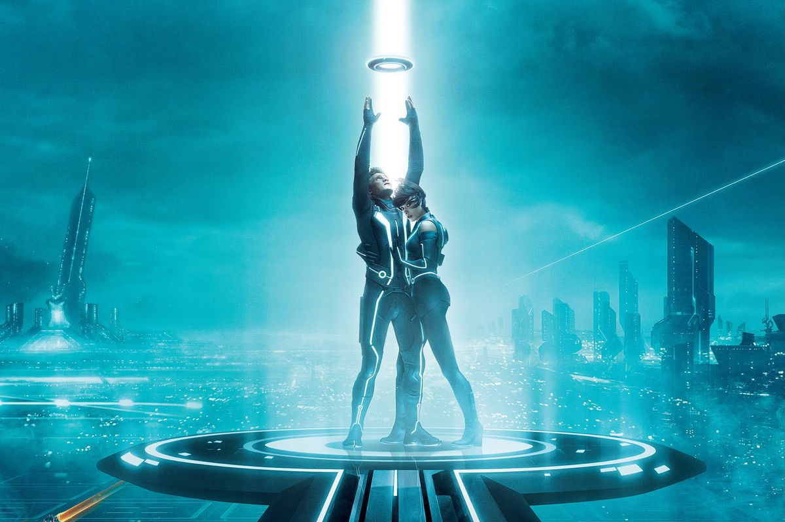
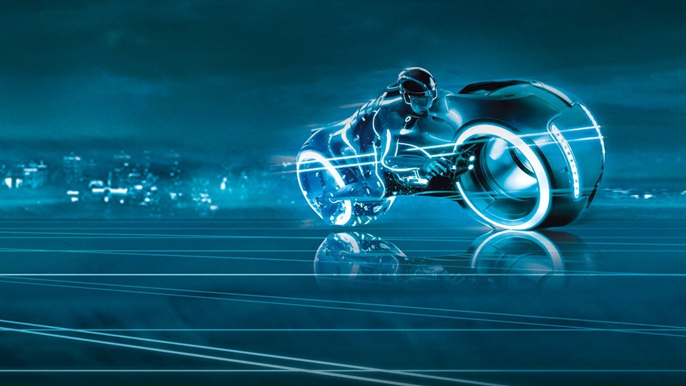

Han pasado más de 10 años desde el estreno de la última pelicula de esta franquicia la cual fue Tron: El legado, que trató de Sam Flynn emprende la busqueda de su padre Kevin Flynn el creador de un videojuego futurista el cual desaparecio hace 25 años, investigando Sam se encuentra con el videojuego y entra a un mundo paralelo donde su padre ha estado atrapado y juntos buscan salir de ese mundo
La franquicia empezó en 1982 con Tron tuviendo un exito considerable que fue adquiriendo mas fanaticos a traves del tiempo, la segunda entrega Tron: Legacy se estrenó en 2010 y en esta nueva cinta se espera que continue con la historia y no sea un reboot
Se dice que el director Garth Davis fue quien convenció a Disney de que él sería el mejor director para su para esta pelicula e incluso Jared Leto no solo va a ser el protagonista sino que tambien será productor de esta